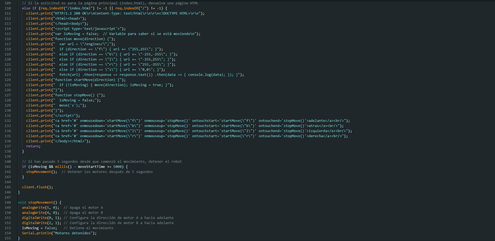
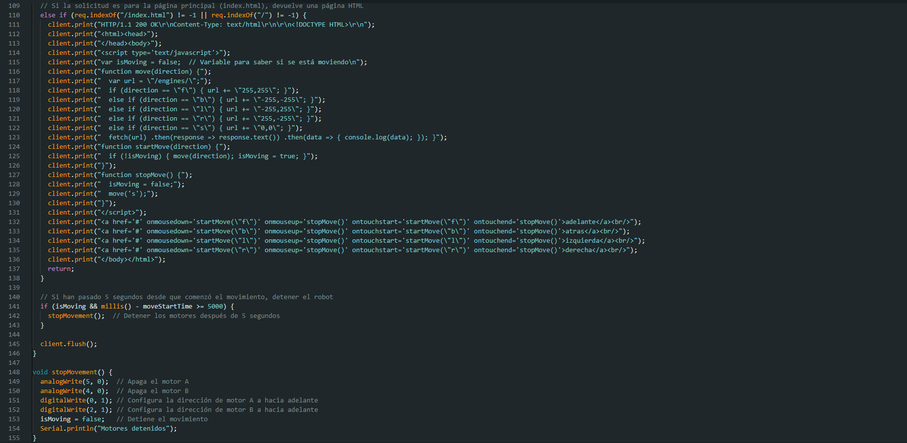

Detalles completos del proyecto ESP8266
 

Se creó un sistema basado en Arduino con capacidad de movimiento, utilizando la placa ESP8266. El dispositivo genera un servidor web al que se puede acceder a través de la red Wi-Fi local, permitiendo el control remoto del sistema.
Básicamente, es un pequeño auto controlado desde el celular mediante una dirección IP, que permite moverlo a distancia y explorar funcionalidades de IoT (Internet de las cosas).